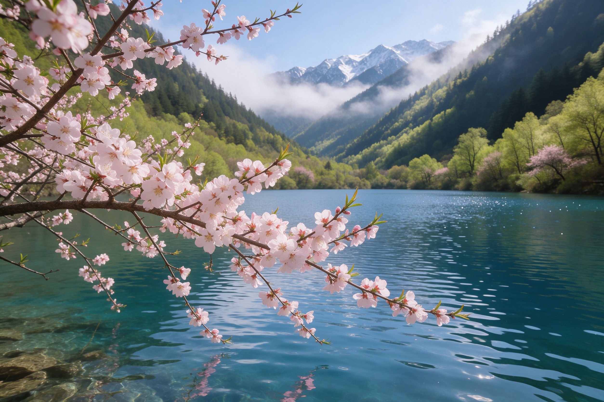
春约 3 月 – 5 月 · 桃花花季
桃花流水，雪水归海
★★★★★
三月野桃花沿海子畔盛开，粉白花瓣落在碧绿水面；五月积雪消融、湖水重新丰盈，雪山在水中投下清冽倒影。此时游人稀少，栈道上只有鸟鸣水声，住宿仅旺季一半价格。
优势
- 人少清净、住宿便宜
- 野桃花映海限定
- 雪山残雪仍清晰
留意
- 早春偏冷、注意保暖
- 海子水位相对低
- 高海拔处仍有残雪
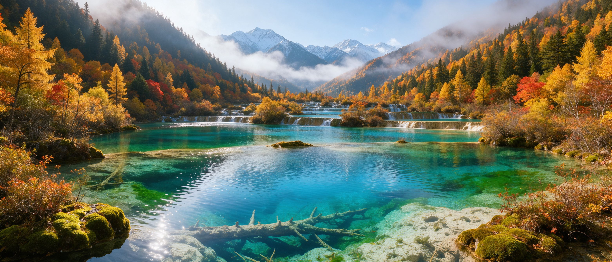
九寨沟位于四川省阿坝藏族羌族自治州九寨沟县，因沟内九个藏族村寨而得名，是世界自然遗产、世界生物圈保护区与国家 5A 级景区。翠海、叠瀑、彩林、雪峰、藏情、蓝冰并称「九寨六绝」，而水，是这里当仁不让的灵魂。
沟内分布着 108 个高山钙华海子（当地人把湖泊称作「海子」），由钙化堤埂层层串联。湖水因深浅、水底沉积物与光线角度不同，呈现宝蓝、翡翠绿、孔雀翎、藏青等千百种色彩，清澈得能看见水下沉睡的枯木。三条主沟——树正沟、日则沟、则查洼沟——在诺日朗交汇，整体呈一个巨大的「Y」字。
景区实行封闭管理，私家车不能进沟，统一换乘观光车。观光车先把游客送到沟尾高处，再沿木质栈道一路向下步行游览，让海子与瀑布依次在眼前展开——「先上后下、由高到低」，是理解九寨沟一整天动线的关键。
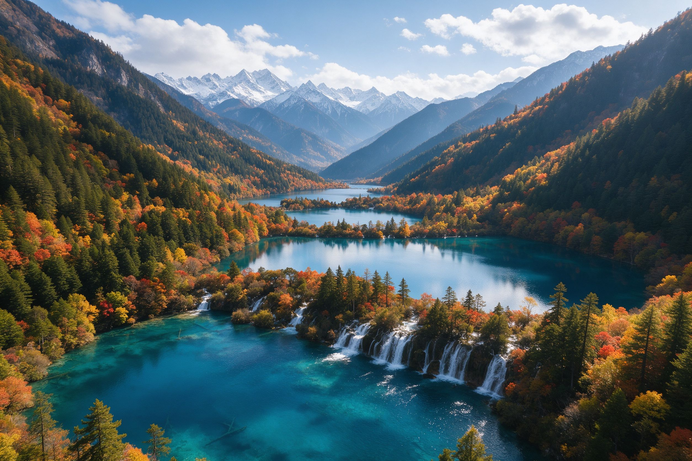
五花海、珍珠滩瀑布、镜海、熊猫海，九寨沟颜值最高的一条沟
沟内最大的长海与最小最艳的五彩池都在这条沟，海拔最高
诺日朗瀑布、树正群海、犀牛海、芦苇海，是进出沟口的风景线
九寨沟的交通枢纽是沟口的漳扎镇。抵达后把行李放在镇上，第二天一早进沟，观光车直达沟尾，再由高到低把三条沟串起来，一天看尽九寨水。
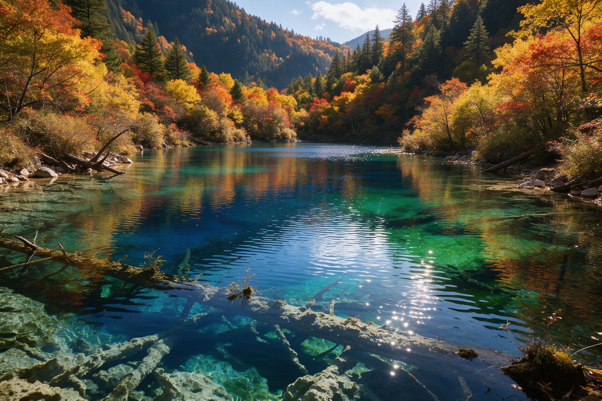
日则沟 · 右线精华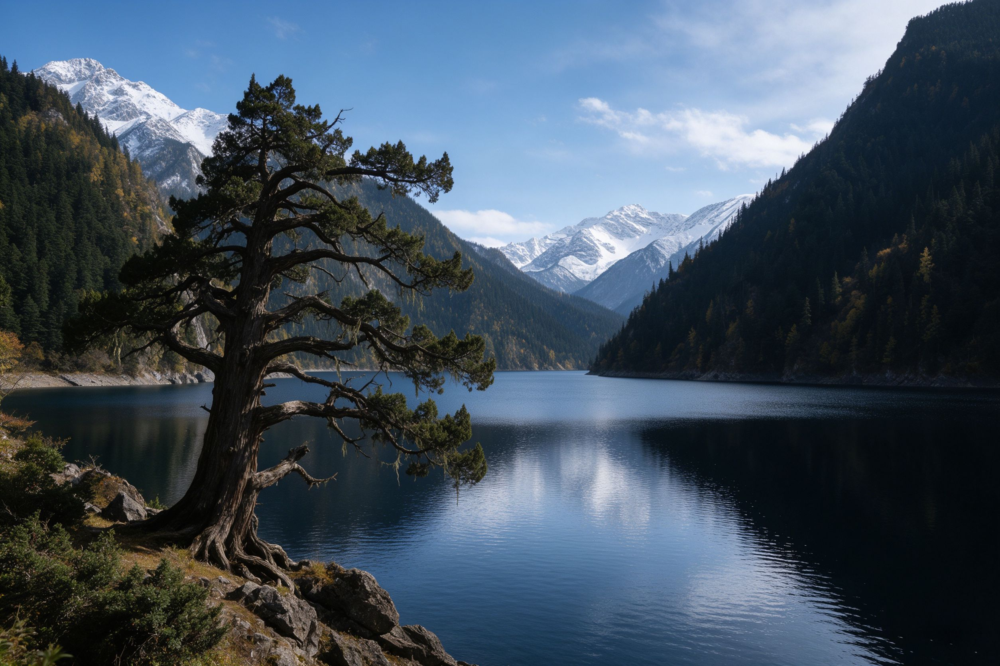
则查洼 + 树正 · 左线下段半天抵达九寨沟口，入住漳扎镇让身体适应约 2000 米海拔。傍晚沿小镇走走，晚上可选看一场《九寨千古情》，当天不进沟。
赶 8:00 开园进沟，观光车直上日则沟，由高到低走完五花海、珍珠滩、镜海；中午在诺日朗中心用餐补给，下午乘车游长海、五彩池，再沿树正沟看诺日朗瀑布与群海出沟。
意犹未尽可二次进沟，专门补清晨无人的镜海倒影与五花海光影；乘飞机的游客可顺路游黄龙钙化彩池，下午带着一整趟山光水色返程。
时间紧怎么压缩：高铁 / 飞机往返、只留一整天进沟，全程 2 天 1 晚也能看全核心景点，但务必早进沟、先走日则沟。门票与观光车票通常当日有效，二次进沟需另行购票，因此第一天优先保证五花海、珍珠滩、长海五彩池这几处精华。
从中国最宽的钙华瀑布到《西游记》片头的珍珠滩，从最小最艳的五彩池到清晨无风的镜海——它们和一百零八个海子一起，构成完整的九寨。
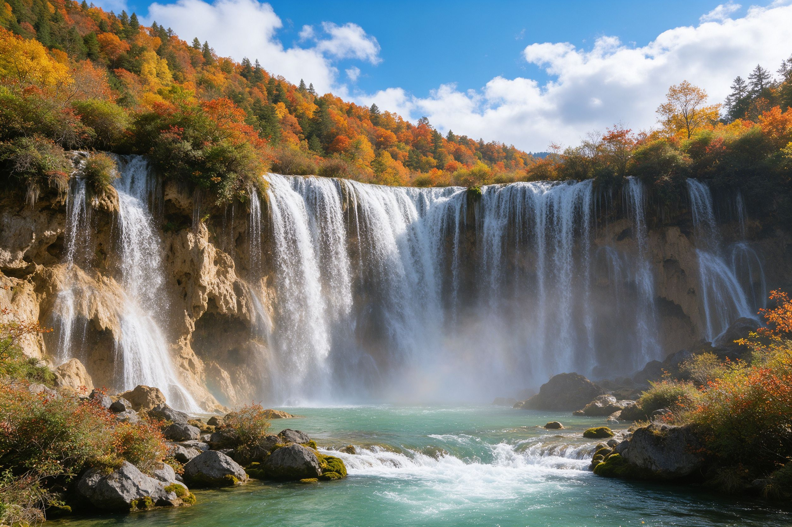
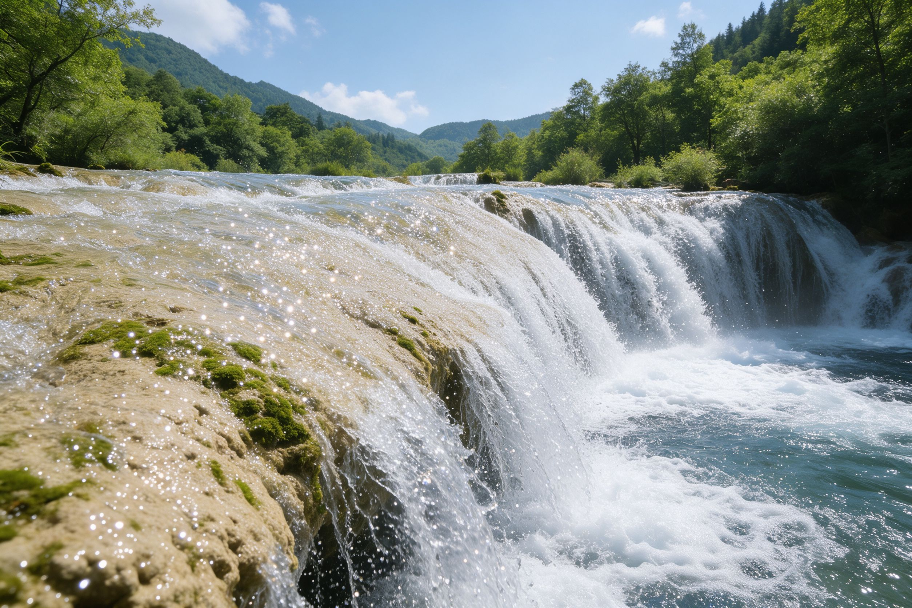
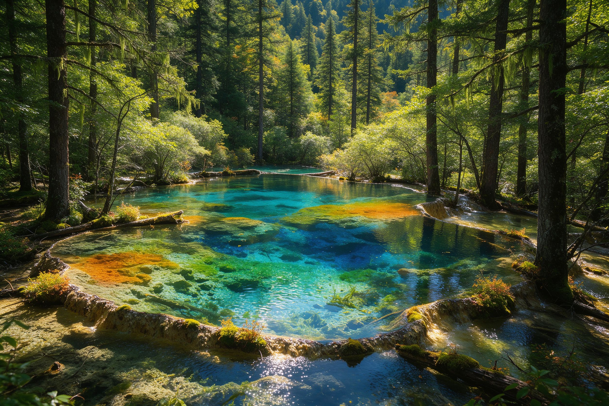
九寨沟的景色随月份剧烈变化：春天桃花映水、夏天飞瀑生烟、秋天彩林倒映、冬天蓝冰映雪。雨季水色是否通透、秋季彩林何时最盛，是选季节时最该权衡的事。

春三月野桃花沿海子畔盛开，粉白花瓣落在碧绿水面；五月积雪消融、湖水重新丰盈，雪山在水中投下清冽倒影。此时游人稀少，栈道上只有鸟鸣水声，住宿仅旺季一半价格。
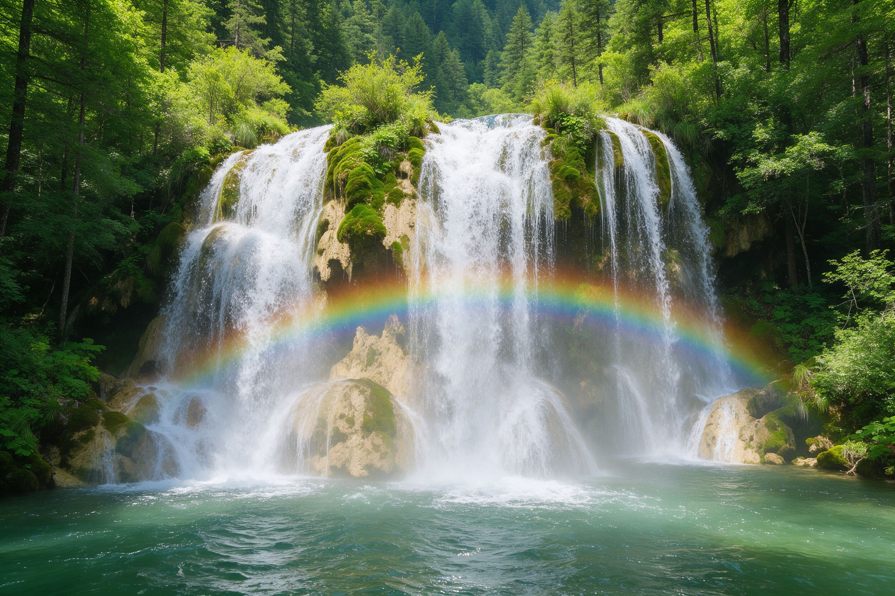
夏丰水期如约而至，诺日朗、珍珠滩进入一年最壮美的时刻，声如雷鸣、水雾弥漫，晴天午后常能撞见彩虹挂在水帘前。山中平均气温仅 20℃，满目浓绿，是天然空调房，适合亲子避暑。
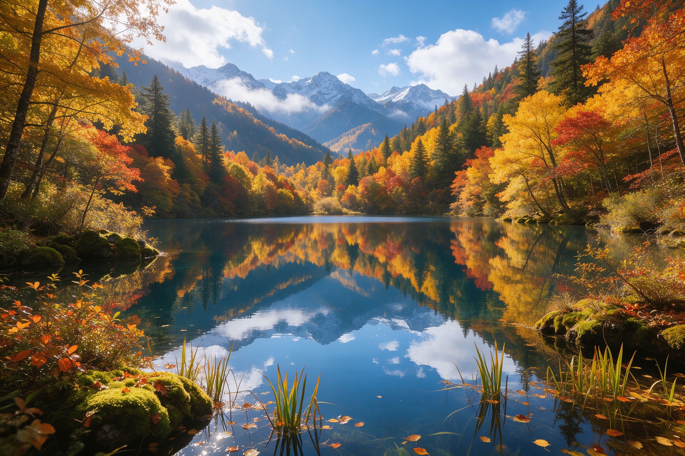
秋公认的颜值巅峰：秋风一夜染透山林，金黄、火红、赭石的彩林层层叠叠倒映在最蓝的海子里，水也斑斓、山也斑斓。10 月 15 日前后一周是巅峰中的巅峰，彩林最盛、海子最蓝、能见度最高。
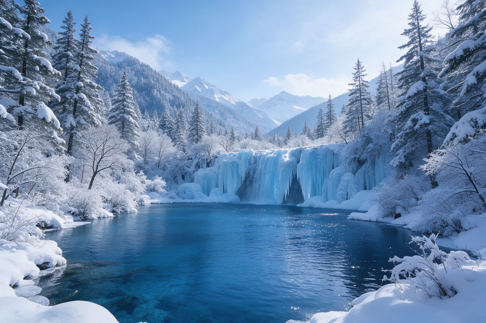
冬一场雪后，群山白头、林海披银，瀑布凝固成巨大的冰幔冰柱，阳光穿过泛着幽蓝的光，便是难得一见的「蓝冰」奇观。海子在白雪环抱中蓝得惊心动魄，没有拥挤人潮，门票执行淡季价，最从容也最省钱。
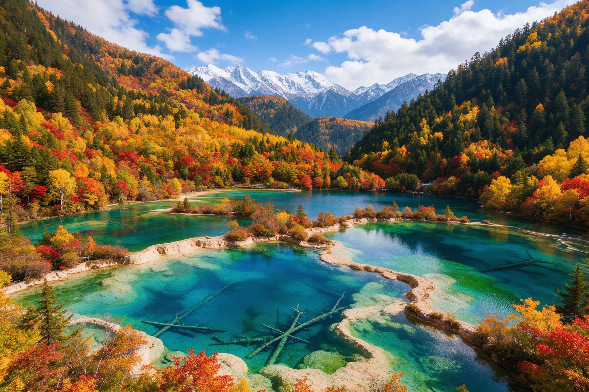
雨季刚过、秋意正浓，是彩林倒影与海子水色唯一同时达到巅峰的窗口，晴天概率与出片率全年最高。想避开国庆人潮，可优先选择下面两个时段：
九寨沟实行实名预约、每日限流，旺季务必提前订票、赶早进沟。以下信息整理自公开攻略，票价与开放政策请以景区当年官方公告为准。
提示：观光车为必坐交通（沟内数十公里、私家车不能进）。具体票价、免票 / 优惠人群与开放时间会随季节调整，出行前请通过「九寨沟景区」官方公众号或平台核实，现场一般不售票。